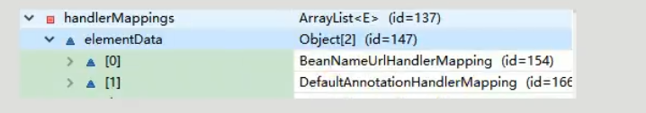

AnnotationDrivenBeanDefinitionParser
mvc:annotation-driven会自动注册
RequestMappingHandlerMapping,
RequestMappingHandlerAdapter，
ExceptionHandlerExceptionResolver 三个bean
还提供以下支持
支持使用ConversionService 实例对表单参数进行类型转换
支持使用@NumberFormat annotation, @DateTimeFormat 注解完成数据类型的格式化
支持使用@Valid注解对JavaBean实例进行JSR 303 校验
支持使用@RequestBody 和 @ResponseBody
@Override
public BeanDefinition parse(Element element, ParserContext parserContext) {
Object source = parserContext.extractSource(element);
CompositeComponentDefinition compDefinition = new CompositeComponentDefinition(element.getTagName(), source);
parserContext.pushContainingComponent(compDefinition);
RuntimeBeanReference contentNegotiationManager = getContentNegotiationManager(element, source, parserContext);
RootBeanDefinition handlerMappingDef = new RootBeanDefinition(RequestMappingHandlerMapping.class);
handlerMappingDef.setSource(source);
handlerMappingDef.setRole(BeanDefinition.ROLE_INFRASTRUCTURE);
handlerMappingDef.getPropertyValues().add("order", 0);
handlerMappingDef.getPropertyValues().add("contentNegotiationManager", contentNegotiationManager);
String methodMappingName = parserContext.getReaderContext().registerWithGeneratedName(handlerMappingDef);
if (element.hasAttribute("enable-matrix-variables") || element.hasAttribute("enableMatrixVariables")) {
Boolean enableMatrixVariables = Boolean.valueOf(element.getAttribute(
element.hasAttribute("enable-matrix-variables") ? "enable-matrix-variables" : "enableMatrixVariables"));
handlerMappingDef.getPropertyValues().add("removeSemicolonContent", !enableMatrixVariables);
}
RuntimeBeanReference conversionService = getConversionService(element, source, parserContext);
RuntimeBeanReference validator = getValidator(element, source, parserContext);
RuntimeBeanReference messageCodesResolver = getMessageCodesResolver(element, source, parserContext);
RootBeanDefinition bindingDef = new RootBeanDefinition(ConfigurableWebBindingInitializer.class);
bindingDef.setSource(source);
bindingDef.setRole(BeanDefinition.ROLE_INFRASTRUCTURE);
bindingDef.getPropertyValues().add("conversionService", conversionService);
bindingDef.getPropertyValues().add("validator", validator);
bindingDef.getPropertyValues().add("messageCodesResolver", messageCodesResolver);
ManagedList<?> messageConverters = getMessageConverters(element, source, parserContext);
ManagedList<?> argumentResolvers = getArgumentResolvers(element, source, parserContext);
ManagedList<?> returnValueHandlers = getReturnValueHandlers(element, source, parserContext);
String asyncTimeout = getAsyncTimeout(element, source, parserContext);
RuntimeBeanReference asyncExecutor = getAsyncExecutor(element, source, parserContext);
ManagedList<?> callableInterceptors = getCallableInterceptors(element, source, parserContext);
ManagedList<?> deferredResultInterceptors = getDeferredResultInterceptors(element, source, parserContext);
RootBeanDefinition handlerAdapterDef = new RootBeanDefinition(RequestMappingHandlerAdapter.class);
handlerAdapterDef.setSource(source);
handlerAdapterDef.setRole(BeanDefinition.ROLE_INFRASTRUCTURE);
handlerAdapterDef.getPropertyValues().add("contentNegotiationManager", contentNegotiationManager);
handlerAdapterDef.getPropertyValues().add("webBindingInitializer", bindingDef);
handlerAdapterDef.getPropertyValues().add("messageConverters", messageConverters);
if (element.hasAttribute("ignore-default-model-on-redirect") || element.hasAttribute("ignoreDefaultModelOnRedirect")) {
Boolean ignoreDefaultModel = Boolean.valueOf(element.getAttribute(
element.hasAttribute("ignore-default-model-on-redirect") ? "ignore-default-model-on-redirect" : "ignoreDefaultModelOnRedirect"));
handlerAdapterDef.getPropertyValues().add("ignoreDefaultModelOnRedirect", ignoreDefaultModel);
}
if (argumentResolvers != null) {
handlerAdapterDef.getPropertyValues().add("customArgumentResolvers", argumentResolvers);
}
if (returnValueHandlers != null) {
handlerAdapterDef.getPropertyValues().add("customReturnValueHandlers", returnValueHandlers);
}
if (asyncTimeout != null) {
handlerAdapterDef.getPropertyValues().add("asyncRequestTimeout", asyncTimeout);
}
if (asyncExecutor != null) {
handlerAdapterDef.getPropertyValues().add("taskExecutor", asyncExecutor);
}
handlerAdapterDef.getPropertyValues().add("callableInterceptors", callableInterceptors);
handlerAdapterDef.getPropertyValues().add("deferredResultInterceptors", deferredResultInterceptors);
String handlerAdapterName = parserContext.getReaderContext().registerWithGeneratedName(handlerAdapterDef);
String uriCompContribName = MvcUriComponentsBuilder.MVC_URI_COMPONENTS_CONTRIBUTOR_BEAN_NAME;
RootBeanDefinition uriCompContribDef = new RootBeanDefinition(CompositeUriComponentsContributorFactoryBean.class);
uriCompContribDef.setSource(source);
uriCompContribDef.getPropertyValues().addPropertyValue("handlerAdapter", handlerAdapterDef);
uriCompContribDef.getPropertyValues().addPropertyValue("conversionService", conversionService);
parserContext.getReaderContext().getRegistry().registerBeanDefinition(uriCompContribName, uriCompContribDef);
RootBeanDefinition csInterceptorDef = new RootBeanDefinition(ConversionServiceExposingInterceptor.class);
csInterceptorDef.setSource(source);
csInterceptorDef.getConstructorArgumentValues().addIndexedArgumentValue(0, conversionService);
RootBeanDefinition mappedCsInterceptorDef = new RootBeanDefinition(MappedInterceptor.class);
mappedCsInterceptorDef.setSource(source);
mappedCsInterceptorDef.setRole(BeanDefinition.ROLE_INFRASTRUCTURE);
mappedCsInterceptorDef.getConstructorArgumentValues().addIndexedArgumentValue(0, (Object) null);
mappedCsInterceptorDef.getConstructorArgumentValues().addIndexedArgumentValue(1, csInterceptorDef);
String mappedInterceptorName = parserContext.getReaderContext().registerWithGeneratedName(mappedCsInterceptorDef);
RootBeanDefinition exceptionHandlerExceptionResolver = new RootBeanDefinition(ExceptionHandlerExceptionResolver.class);
exceptionHandlerExceptionResolver.setSource(source);
exceptionHandlerExceptionResolver.setRole(BeanDefinition.ROLE_INFRASTRUCTURE);
exceptionHandlerExceptionResolver.getPropertyValues().add("contentNegotiationManager", contentNegotiationManager);
exceptionHandlerExceptionResolver.getPropertyValues().add("messageConverters", messageConverters);
exceptionHandlerExceptionResolver.getPropertyValues().add("order", 0);
String methodExceptionResolverName =
parserContext.getReaderContext().registerWithGeneratedName(exceptionHandlerExceptionResolver);
RootBeanDefinition responseStatusExceptionResolver = new RootBeanDefinition(ResponseStatusExceptionResolver.class);
responseStatusExceptionResolver.setSource(source);
responseStatusExceptionResolver.setRole(BeanDefinition.ROLE_INFRASTRUCTURE);
responseStatusExceptionResolver.getPropertyValues().add("order", 1);
String responseStatusExceptionResolverName =
parserContext.getReaderContext().registerWithGeneratedName(responseStatusExceptionResolver);
RootBeanDefinition defaultExceptionResolver = new RootBeanDefinition(DefaultHandlerExceptionResolver.class);
defaultExceptionResolver.setSource(source);
defaultExceptionResolver.setRole(BeanDefinition.ROLE_INFRASTRUCTURE);
defaultExceptionResolver.getPropertyValues().add("order", 2);
String defaultExceptionResolverName =
parserContext.getReaderContext().registerWithGeneratedName(defaultExceptionResolver);
parserContext.registerComponent(new BeanComponentDefinition(handlerMappingDef, methodMappingName));
parserContext.registerComponent(new BeanComponentDefinition(handlerAdapterDef, handlerAdapterName));
parserContext.registerComponent(new BeanComponentDefinition(uriCompContribDef, uriCompContribName));
parserContext.registerComponent(new BeanComponentDefinition(exceptionHandlerExceptionResolver, methodExceptionResolverName));
parserContext.registerComponent(new BeanComponentDefinition(responseStatusExceptionResolver, responseStatusExceptionResolverName));
parserContext.registerComponent(new BeanComponentDefinition(defaultExceptionResolver, defaultExceptionResolverName));
parserContext.registerComponent(new BeanComponentDefinition(mappedCsInterceptorDef, mappedInterceptorName));
// Ensure BeanNameUrlHandlerMapping (SPR-8289) and default HandlerAdapters are not "turned off"
MvcNamespaceUtils.registerDefaultComponents(parserContext, source);
parserContext.popAndRegisterContainingComponent();
return null;
}
情况1，动态能访问静态不能访问

handlermapping中无静态资源的映射路径
情况2默认交给tomcat处理
<mvc:default-servlet-handler/>


情况3静态动态都能访问
<mvc:default-servlet-handler/>
<mvc:annotation-driven></mvc:annotation-driven>


情况4<mvc:annotation-driven></mvc:annotation-driven> 静态不能访问